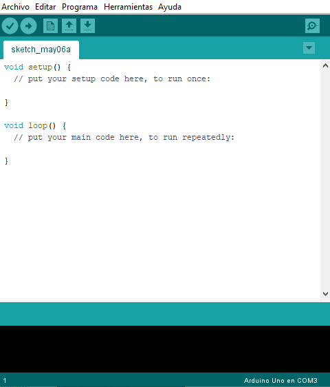
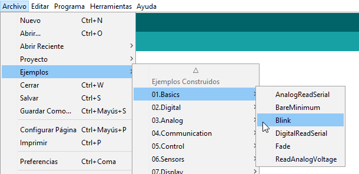
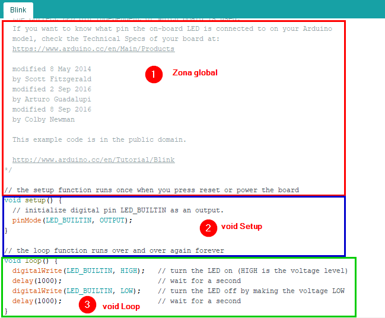
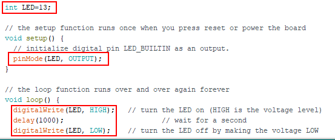
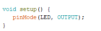
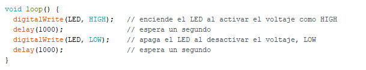
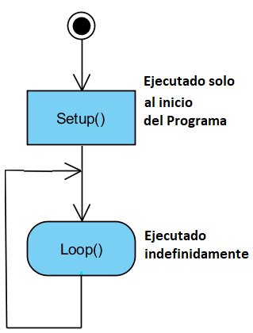
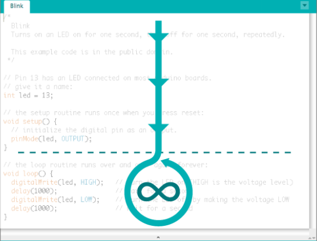

Vamos a desarrollar este punto basándonos en un programa de ejemplo que viene cuando ejemplo que viene con el IDE Arduino.
Ejecuta el IDE Arduino y se nos abrirá la siguiente pestaña:

Abre el programa de ejemplo «Blink», este programa hace que el LED que lleva incorporado la placa Arduino y que está conectado al pin 13 se encienda y se apague con un intervalo de 1 segundo:

El código que nos aparecerá en pantalla tienes tres partes principales:

Zona global
Aquí será donde indicaremos a Arduino los nombres de los pines y donde crearemos aquellas variables que queramos que existan en todo el programa. Aunque comprende todo lo que está fuera de las otras dos zonas, es recomendable agruparlo todo en la parte superior del código.
También se pueden crear nuestras propias funciones. En el caso del ejemplo “Blink”, podríamos haber puesto lo siguiente:

Con esto estamos creando una variable en la que guardaremos el número del pin que utilizaremos conectado al LED.
La función void setup ( )
Esta función se ejecuta cada vez que se inicia Arduino. Una de las operaciones que se realiza en void setup () es la de configurar de los pines que vamos a utilizar.
En el caso del ejemplo :

Como sólo se usa un pin, llamado “LED”, sólo existe una función de configuración “pinMode” en la que indicamos que lo usaremos como salida.
La función void loop ( )
Esta función es el corazón de los programas creados con arduino. Es una función que permanece en ejecución en forma de bucle infinito. Esto quiere decir que se ejecuta de comienzo a fin, de forma repetida, siempre.
Esto queda más claro viendo el contenido del ejemplo:

Una vez que ha esperado un segundo por segunda vez, la ejecución vuelve al principio de loop y volvería a encender el led, y así sucesivamente.
Flujo de programación
Por lo tanto podemos imaginarnos, de una manera visual, que la ejecución normal de un programa de Arduino es de la siguiente manera:

